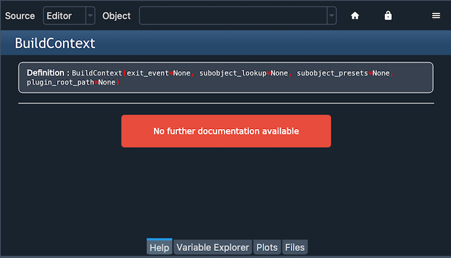
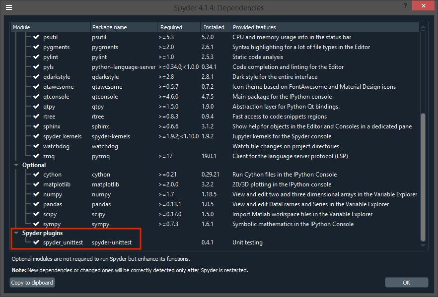

Problemas comunes#
Más allá de los pasos generales de la solución de problemas, algunos problemas reportados con frecuencia requieren soluciones más especializadas.
Errores al iniciar el núcleo#
Si recibes el mensaje Ocurrió un error mientras iniciaba el núcleo en el Terminal de IPython, Spyder no pudo lanzar un nuevo intérprete de Python en el entorno de trabajo actual para ejecutar su código. Hay una serie de problemas que pueden causarlo, pero la mayoría se puede solucionar con bastante rapidez con unos pocos pasos fáciles.
Spyder-Kernels no está instalado o es incompatible#
Spyder requiere que una versión compatible del paquete``spyder-kernels`` esté presente en el entorno de trabajo en el que deseas ejecutar tu consola.

Se incluye por defecto con Anaconda, pero si quieres ejecutar tu código en otro entorno Python o instalación, necesitarás asegurarte de que esté instalado y actualizado a la última versión.
Revisa la versión requerida de los spyder-kernels para tu versión de Spyder en la siguiente tabla:
Spyder |
Spyder-Kernels |
|---|---|
4.0.0-4.0.1 |
1.8.1 |
4.1.0-4.1.2 |
1.9.0 |
4.1.3 |
1.9.1 |
4.1.4 |
1.9.3 |
4.1.5-4.1.6 |
1.9.4 |
4.2.0 |
1.10.0 |
5.0.0-5.0.5 |
2.0.5 |
5.1.0-5.1.5 |
2.1.3 |
5.2.0-5.2.1 |
2.2.0 |
5.2.2 |
2.2.1 |
5.3.0-5.3.3 |
2.3.3 |
5.4.0-5.4.3 |
2.4.3 |
Para ello, activa el entorno, a continuación, instala spyder-kernels. Si utilizas Anaconda, abre una consola (Anaconda Prompt en Windows) y ejecuta:
conda activate ENVIRONEMENT-NAME
conda install spyder-kernels=<VERSION>
De lo contrario, activa tu entorno por el medio que lo hayas creado, y ejecuta:
pip install spyder-kernels==<VERSION>
Para los dos comandos anteriores, reemplaza <VERSION> con la versión correspondiente en la tabla.
Problemas con otra dependencia#
Si el núcleo muestra un seguimiento de errores largo que menciona otros paquetes como ipython, ipykernel, jupyter_client, traitlets o pyzmq, el problema puede ser una versión desactualizada o incompatible de un paquete de dependencias. Para arreglar esto, activa el entorno y actualiza las dependencias clave.
En un ambiente de Anaconda:
conda activate ENVIRONMENT-NAME
conda update spyder-kernels ipython ipykernel jupyter_client jupyter_core pyzmq traitlets
De lo contrario, activa tu entorno por el medio que lo hayas creado, y ejecuta:
pip install -U spyder-kernels ipython ipykernel jupyter_client jupyter_core pyzmq traitlets
AttributeError/ImportError#
Comprueba las últimas líneas del mensaje de error y revisa si es un AttributeError o ImportError, o si se refiere a un archivo que creaste en tu directorio de trabajo actual o en tu carpeta de inicio (C:/Users/YOUR_USERNAME en Windows, /Users/YOUR_USERNAME on macOS, or /home/YOUR_USERNAME en Linux).
Si es así, el error probablemente se deba a que tu archivo recibe el mismo nombre que un módulo de librería estándar de Python, como string.py o time.py, que anula el módulo integrado que Spyder-Kernels está intentando cargar. Para arreglar esto, simplemente renombra tu archivo con un nombre distinto e intenta reiniciar el núcleo. Para comprobar los nombres de estos módulos, revisa la lista en la Python standard library documentation.
El autocompletado o la ayuda no funcionan#
Para proporcionar completado, ayuda y análisis de código en tiempo real en el Editor, Spyder utiliza el Python Language Server (PyLS), una implementación de la especificación del Language Server Protocol utilizado por VSCode, Atom y otros editores e IDEs populares. La mayoría de los errores de ayuda y completado están fuera del control de Spyder y son limitaciones de PyLS o del código que se está programando, pero algunos pueden ser solucionados por los usuarios.
Docstring faltante de un objeto#
Si no se muestra nada en el calltip, las sugerencias al pasar el cursor o en el panel de ayuda, es posible que el objeto al que estás intentando realizar una introspección no tenga un docstring.
{kind=link}
En este caso, la única solución es añadir uno en el código fuente de la función original, método o clase.
El objeto no puede ser encontrado#
Algunos objetos, ya sea por estar escritos en C, Cython u otro idioma; por ser generados dinámicamente en tiempo de ejecución; o por ser un método de un objeto que creaste, no se pueden encontrar fácilmente sin ejecutar el código.

Sin embargo, una vez que ejecutes tu código en la Terminal de IPython, es posible que puedas obtener la ayuda y el completado del objeto allí.
El LSP ha dejado de funcionar#
Ocasionalmente, especialmente después de usar Spyder por un tiempo, el completado, la ayuda y el análisis de código pueden dejar de funcionar. Si este es el caso, puedes comprobar el estado LSP con el elemento LSP Python en la barra de estado de Spyder en la parte inferior de la pantalla, y reiniciarlo haciendo clic con el botón derecho y seleccionando el elemento Reiniciar el servidor de lenguaje de Python.

Error de Spyder debido a problemas con sus dependencias#
Dada la variedad de dependencias involucradas en hacer que el LSP funcione, una versión incompatible o desactualizada de tu entorno puede resultar en mensajes de error, resultados incompletos o ayuda/análisis que no funcionen en absoluto.
Para solucionar esto, primero intenta actualizar Anaconda y Spyder como se describe en Primera ayuda básica. Si el problema todavía no está resuelto, actualiza las distintas dependencias relevantes con:
conda update python-language-server
Problemas de plugin#
El plugin no funciona en absoluto#
Si tienes instalado un plugin de Spyder, pero no puedes verlo, ve al submenú Paneles del menú Ver y selecciona el nombre del plugin, que debería hacer que su panel sea visible. Si no ves el plugin allí, selecciona el elemento Dependencias en el menú Ayuda y mira si el plugin aparece en la parte inferior.
Si el plugin con el problema no aparece en el diálogo de dependencias, comprueba que lo instalaste en el mismo entorno que Spyder. Si lo tienes, el problema puede deberse a un problema de dependencia. Comprueba si puedes importar el plugin manualmente abriendo una consola Python en el mismo entorno que Spyder y escribiendo, por ejemplo, importar spyder_unittest para probar el plugin de Spyder-Unittest; este comando debe ejecutarse sin errores.
Si nada de esto te ayuda a resolver el problema, entonces continúa a la siguiente sección.
Otros problemas#
Si obtienes un error que mencione o involucra un plugin de Spyder, como spyder-unittest, spyder-terminal o spyder-notebook, o si encuentras cualquier otro problema con un plugin de Spyder, entonces el primer enfoque debe ser actualizar Spyder y el plugin a sus últimas versiones.
Si esto no soluciona el problema, deberías comprobar el sitio web o repositorio del plugin para ver si es compatible con tu versión de Spyder.
Finalmente, si la compatibilidad no parece ser el problema, por favor, comprueba esos repositorios para ver si ya se ha abierto un problema e infórmalo allí si no es así.